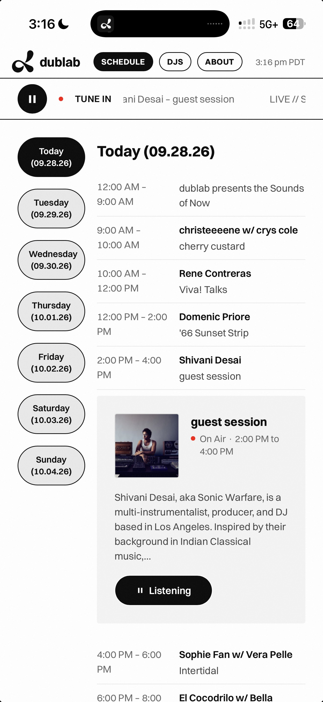
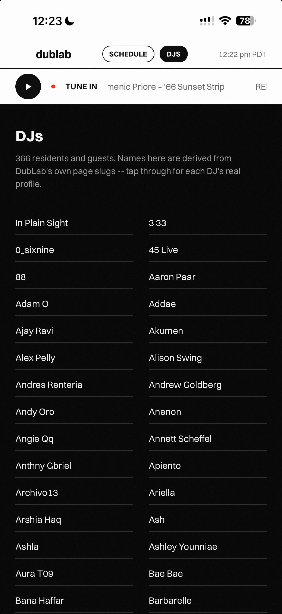
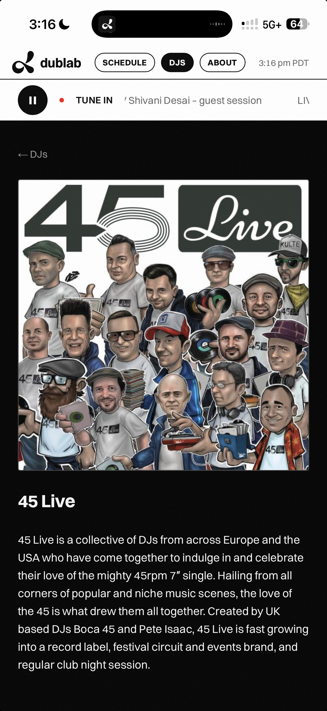
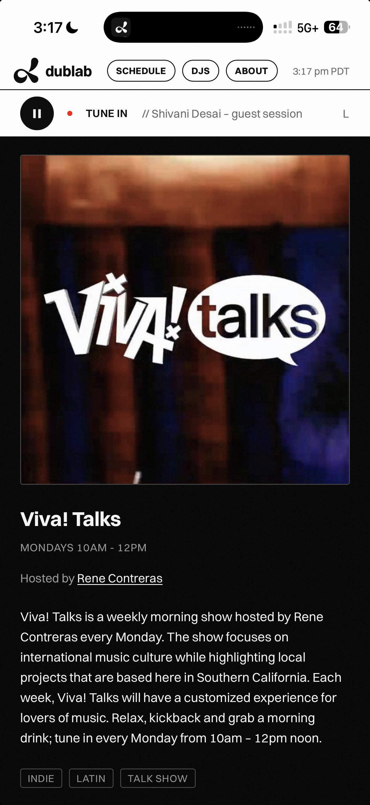
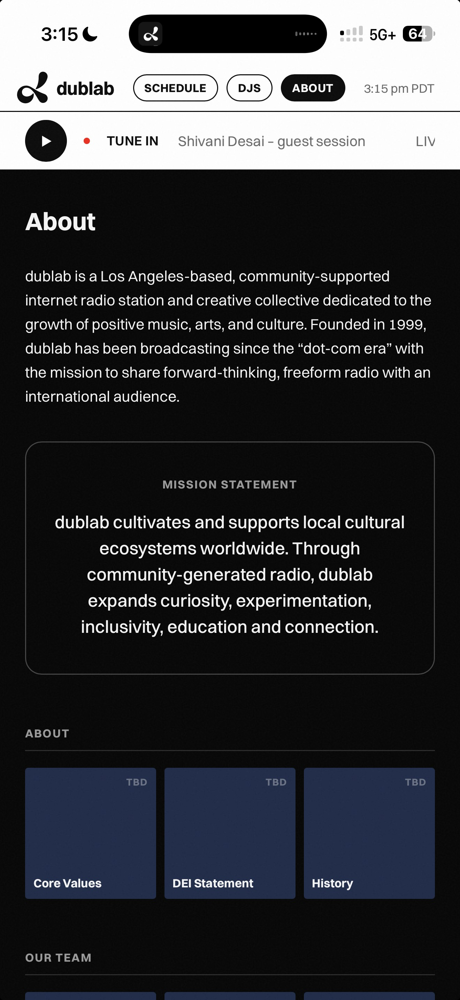
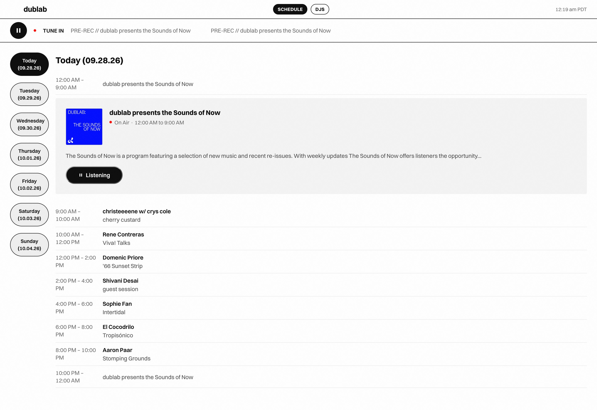

dublab mobile
A native-feeling PWA for dublab, LA's independent, community-supported radio station — built from an acquaintance's recurring complaint that after years of people saying someone should build this, as far as he knew, no one currently had.

On a real phone — the actual point of this whole build.
An acquaintance who's followed dublab for years brought up, again, that as far as he knew, no one had built it a proper app — a conversation that had apparently happened many times before, always ending the same way. (A real one existed once, years earlier, before his time with the station — this was built without knowing that.)
Scoped deliberately small to start: Tune In (live audio) and Schedule only, real enough to send to a contact at dublab for honest feedback on whether the organization would ever actually adopt something like it.
DJ profiles and individual show pages came later, once the core two felt solid enough to be worth expanding.
dublab actually runs two separate feeds — a Livepeer video stream that goes offline independently, and an Airtime Pro audio stream that's the real 24/7 signal. The wrong one was wired up first; a closer look at dublab.com's own source found the real one.
dublab's schedule and DJ data have no CORS headers, so a Next.js API route proxies both — the app never talks to their endpoints directly from the browser.
The schedule started as two separate experiences (a home-screen preview plus a dedicated page) before a straightforward call: one schedule, not two — opened straight to today, with the current time's slot already highlighted.




A visual flicker on real iPhones when tapping between distant days in the schedule, invisible in every desktop and automated test.
Four theories were tried and ruled out in turn — a React re-render timing collision, a stepped-scroll approach that made it worse, a theme-color mismatch (a real, partial fix), and an expensive live grain filter.
The real breakthrough came from a user, not a hypothesis: real copy from a Friday show flashed on screen mid-scroll during a Today→Saturday jump, proof this was a WebKit stale-tile-cache artifact, not a paint or timing bug.
The fix was architectural: stop rendering all seven days on one scrollable page. Tapping a day now swaps which single day is shown instantly, with no long scroll left for iOS to mishandle.
Shipped: live audio with auto-reconnect, a single consolidated schedule, a real 366-name DJ roster, individual DJ and show pages, and a genuine "Add to Home Screen" PWA experience.
Fixed live, from real usage: the schedule flicker above, a status-bar bleed-through, a header that disappeared on fast upward scroll, and an on-air "live" dot that squashed into an oval under layout pressure.
Cut, on purpose: no service worker, so there's no false offline promise the app can't keep. No push notifications, no account system, no user-submitted content.

Everything shipped, in one view — schedule, on-air card, and the Listen/pause toggle at its final sized-to-content width.
The flicker bug resisted normal debugging — screen recordings needed automated, frame-by-frame pixel-diffing after an early visual scan missed a real black-flash frame sitting right there in the footage.
The most useful test wasn't a bug hunt at all: listening to the live stream all day, in the car, on a real phone.
Network drop-outs surfaced immediately. The player just went quiet and stayed quiet, with no way back in without manually hitting play again — that became the auto-reconnect feature above.
Live, installable, and used for real: added to a real home screen, listened to for a full real day, and genuinely closed out on the bug that mattered most — not just presumed fixed from a clean-looking build.
Sent to a contact at dublab for honest feedback on whether the organization would consider something like this — the real test this whole build was scoped around from day one.
Try it live — best experienced on a phone, added to your home screen.
- Next.js
- PWA
- Live Product